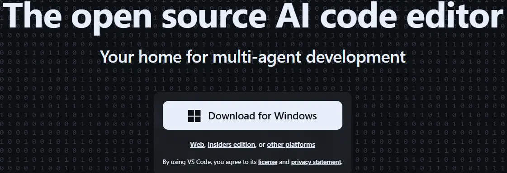
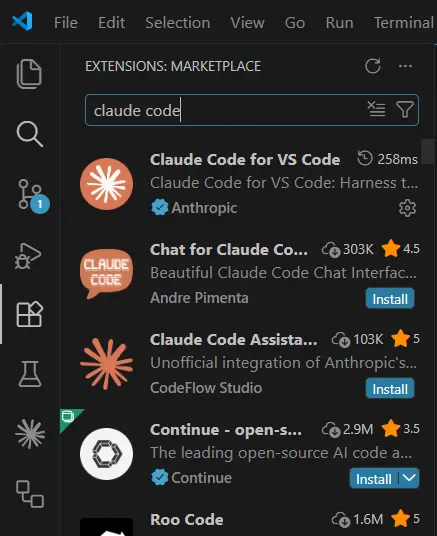
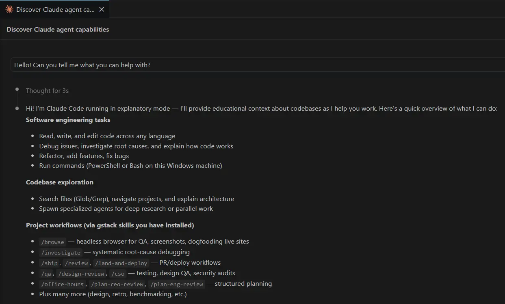
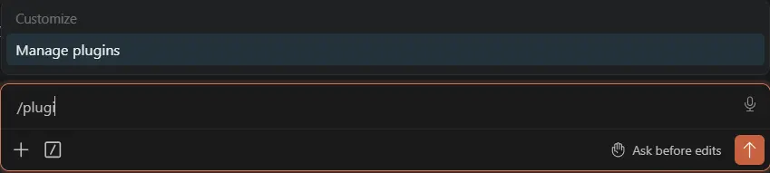

Before you start
You'll need these four things. Check them off as you go — your progress is saved automatically.
Set up your accounts ✓
Make a GitHub account
Think of GitHub like Dropbox for code — a place online where your projects live so you don't lose them, and so you can share them.
Pick a username (this will be public — many people use a version of their real name), enter your email, and choose a password. GitHub will email you a code to verify your address.
Make a Claude account
Claude is the AI you'll be talking to. Anthropic is the company that makes Claude.
Sign up using your email or Google account. You'll get a verification email — click the link to confirm.
console.anthropic.com, which is a developer tool with its own pay-per-use "credits" billing. That is not what this guide uses — if you end up there, close it and go back to claude.ai.Subscribe to a plan
Claude Code needs a paid subscription. On claude.ai, open your account menu (your initials, bottom-left of the sidebar) and choose Upgrade — or go to Settings → Billing.
Claude Pro — $20/month. The right choice for almost every beginner. A flat monthly fee with a generous usage limit that resets every few hours. Predictable cost, no surprises.
Claude Max — $100 or $200/month. The same thing with much higher limits (5× and 20× Pro). Only worth it once you're using Claude Code heavily, every day.
Add a payment method, choose Pro, and confirm.
Install your tools ✓
Install VSCode
VSCode is a free code editor from Microsoft. Think of it like Microsoft Word, but for code. It's where you'll talk to Claude.
Click the big "Download for Windows" button. Once the download finishes, double-click the installer and accept the defaults — the only setting worth changing is checking "Add to PATH" if it's not already checked (this lets other tools find VSCode).
Click the big "Download Mac Universal" button. Once the .zip finishes downloading, double-click it to unzip. Drag the Visual Studio Code icon into your Applications folder.

Install Claude Code
Claude Code is the actual AI assistant that runs inside VSCode. It can read your files, write code, and run commands for you.
Open PowerShell (press the Windows key, type "PowerShell", press Enter) and paste this command:
irm https://claude.ai/install.ps1 | iexPress Enter. Wait for it to finish (usually under a minute). The installer handles everything automatically and keeps Claude Code updated in the background.
If you prefer Windows CMD (Command Prompt) instead of PowerShell:
curl -fsSL https://claude.ai/install.cmd -o install.cmd && install.cmd && del install.cmdOpen Terminal (press Cmd+Space, type "Terminal", press Enter). Paste this command:
curl -fsSL https://claude.ai/install.sh | bashThe installer handles everything automatically and keeps Claude Code updated in the background.
Prefer Homebrew? Run this instead (does not auto-update — run brew upgrade claude-code periodically):
brew install --cask claude-codeInstall the Claude Code VSCode extension
This is the panel inside VSCode where you'll actually chat with Claude.
Open VSCode. On the left sidebar, click the Extensions icon (it looks like four squares). In the search box, type Claude Code. Find the one published by Anthropic and click Install.

Sign in
After install, you'll see a Claude icon on the left sidebar — click it to open the Claude Code panel. The panel will prompt you to sign in. Click Sign in; a browser tab opens; sign in with the claude.ai account you created in Section 1; the tab closes and the panel says you're connected.
Say hello to Claude
In the Claude Code panel, type this and press Enter:
Hello! Can you tell me what you can help with?You should see Claude reply within a few seconds. Congrats — you're set up.

Make a home for your projects
Pick one folder where all your future projects will live. This keeps things tidy and makes them easy to find. A common choice is a folder called Code right inside your user folder.
Open File Explorer (Windows key + E). In the left sidebar, click your username. In the empty area, right-click and choose New → Folder, name it Code, and press Enter. The full path will be C:\Users\<your-name>\Code.
Open Finder. In the top menu, click Go → Home. In the empty area, right-click and choose New Folder, name it Code, and press Enter. The full path will be ~/Code (which expands to /Users/<your-name>/Code).
Now tell VSCode to use this folder by default when you clone a project from GitHub. In VSCode, press +, (comma) to open Settings. In the search bar, type default clone directory. Set the value to the path of your new Code folder.
Code folder and change the VSCode setting for you, then tell you the path.Create a folder called Code in my home folder if it doesn't already exist, then set it as the default folder for cloning GitHub projects in my VS Code settings (the git.defaultCloneDirectory setting). Tell me the full path when you're done.See your Claude usage with ccusage
ccusage is a free command-line tool that reads Claude Code's local logs and shows how many tokens you've used and what it would cost — handy for keeping an eye on your plan limits.
It runs through bun, a small, fast JavaScript runtime. Install bun first.
In PowerShell, paste:
irm bun.sh/install.ps1 | iexIn Terminal, paste:
curl -fsSL https://bun.sh/install | bashClose and reopen your PowerShellTerminal window so the new bun command is on your PATH. Then run:
bunx ccusageYou'll see a table of your recent days — tokens in, tokens out, and an estimated cost. Run it any time you want a quick read on your usage.
Add superpowers ✓
What are "skills"?
Skills are expansion packs for Claude. Each one teaches Claude a new way of working — like how to brainstorm before coding, or how to use a real browser to test a website.
You'll install two skill packs now. Both are free.
Install superpowers (by Jesse Vincent / "obra")
This adds careful planning, debugging, and code review skills. In the Claude Code panel, paste each of these one at a time:
/plugin marketplace add obra/superpowers-marketplace/plugin install superpowers@superpowers-marketplace
Install gstack (by Garry Tan)
This adds testing, deployment, and design-review skills — handy when you want Claude to actually try the website it just built.
On Windows, run this in Git Bash (it was installed when you installed Git). Find it by pressing the Windows key, typing "Git Bash", and pressing Enter. Then paste:
git clone --single-branch --depth 1 https://github.com/garrytan/gstack.git ~/.claude/skills/gstack && cd ~/.claude/skills/gstack && ./setupOn Mac, run this in Terminal (Cmd+Space, type "Terminal", press Enter). Paste:
git clone --single-branch --depth 1 https://github.com/garrytan/gstack.git ~/.claude/skills/gstack && cd ~/.claude/skills/gstack && ./setupInstall frontend-design (by Anthropic)
This teaches Claude to design distinctive, polished web interfaces — instead of the bland, generic look AI tends to default to. Especially handy if you're building a website.
In the Claude Code panel, paste each of these one at a time:
/plugin marketplace add anthropics/claude-code/plugin install frontend-design@claude-code-pluginsTry one
In the Claude Code panel, type:
/brainstorm I want to build a small website about my favorite hobbyClaude should now walk you through a structured brainstorming conversation before writing any code. That's superpowers in action.
Use Claude Code well ✓
Describe the goal, not the keystrokes
Claude is better at the "what" than the "how". Tell it the outcome you want, not the exact steps.
Give context first
Claude can't see what's on your screen or in your head. Tell it what you're working on before you ask for help.
Show, don't tell
If you can show an example — a screenshot, a sample, a piece of code you like — Claude will mimic it better than it can imagine it.
Be specific about the output
Tell Claude what format you want back. Otherwise you'll get whatever it guesses.
Giving feedback mid-task
You don't have to wait for Claude to finish. While it's working, you can:
Type a new message to redirect — Claude reads it and adjusts.
Press Escape to stop a run that's going sideways.
If a conversation has wandered far from what you wanted, it's often faster to start a fresh conversation than to try to steer the old one back.
The four git commands worth knowing
You don't need to be a git expert. Just these four, in this order:
git status # What files have I changed?
git add . # Stage all my changes
git commit -m "what I did" # Save a snapshot
git push # Send the snapshot to GitHubRun these in PowerShell (Windows) or Terminal (Mac) from inside your project folder. Claude can also run them for you — just ask "commit and push my changes".
Try your first project ✓
Pick one and paste the prompt into Claude Code. Each takes 5–20 minutes for Claude to do — you mostly just watch and answer the occasional question.
🌐 A personal website
One-page site about you. Deployed to the internet, free.
Build me a one-page personal website about me. Include my name, a short bio, and a way to contact me. Deploy it to GitHub Pages.🐍 A Python tool
A small script that does a useful thing.
Write a Python script that organizes the files in my Downloads folder by file type (PDFs in one folder, images in another, etc.).📊 A PowerPoint deck
Yes — Claude can generate real .pptx files.
Make a 5-slide PowerPoint introducing me to my new team. Use a clean modern design.📈 An Excel spreadsheet
A working .xlsx with formulas you can edit.
Build a monthly budget spreadsheet with categories for rent, food, transportation, and savings. Include formulas that show how much I have left.